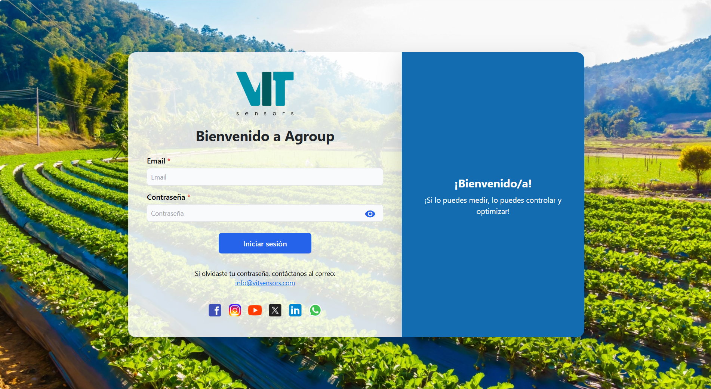
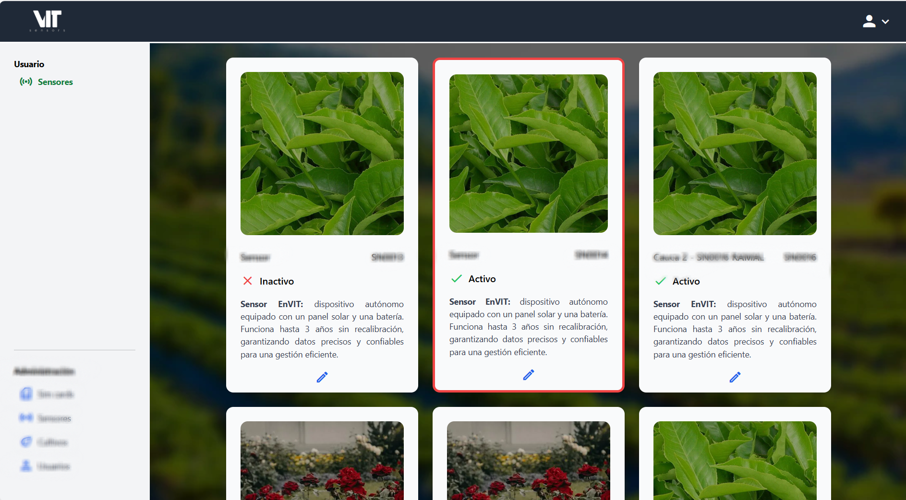
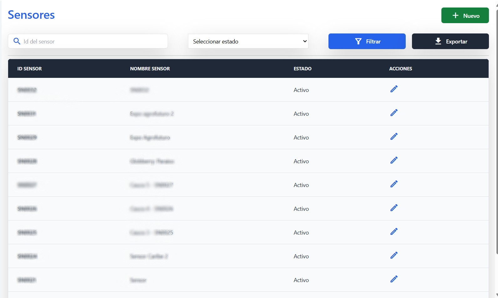
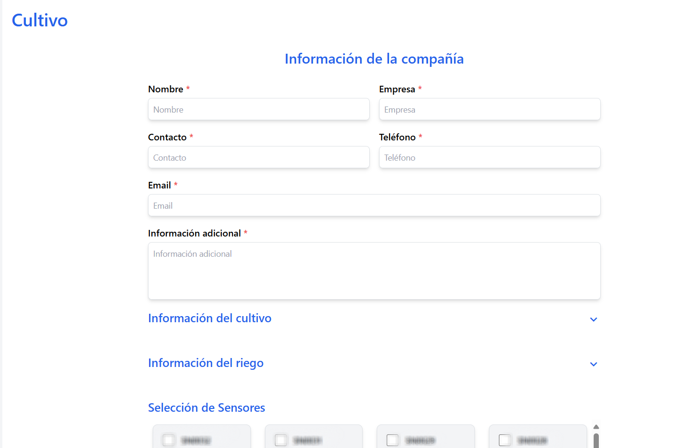

🌱 Agroup – Smart Agriculture Platform
📖 Overview
A platform focused on the digitalization of agricultural monitoring through IoT sensors that transmit environmental and geospatial data in real time.
The system enables the management of crops, users, and automated alerts, while providing dynamic and intuitive dashboards for data visualization.
I started as a co-founder and later took on the role of lead developer, responsible for the system’s technical architecture, cloud infrastructure, and performance optimization strategy.
👤 Role and Responsibilities
- Main Role: Co-founder & Lead Developer
- Key Contributions:
- Led technical decisions and architectural strategy.
- Designed, developed, and deployed backend and frontend components.
- Configured and managed the entire AWS-based infrastructure.
- Provided mentorship and code reviews for interns and junior developers.
🛠️ Tech Stack
- Backend: Spring Boot
- Frontend: React (migrated from v16 → v19)
- Database: AWS RDS (migration from DynamoDB)
- Infrastructure: AWS Elastic Beanstalk, Route 53, Amplify, S3
- Additional Services: Scheduled tasks
🧭 System Architecture
The following diagram illustrates the main data flow and components within the Agroup platform.
graph LR
S[Sensor IoT] -->|MQTT/HTTP| A[API Spring Boot]
A --> B[(AWS RDS)]
A --> C[S3 Bucket]
A --> D[Frontend React]
D -->|Dynamic panels| U[User]
🚀 Core Features
- Real-time data ingestion, storage, and visualization from IoT sensors.
- Full administration of sensors, users, crops, and simulation processes.
- Automated email alerts and notifications.
- GPS coordinate tracking alongside environmental metrics.
- Scheduled background tasks for periodic calculations (every 30 minutes).
🏆 Technical Achievements
- ⚡ Performance Optimization: Reduced sensor write time from ~3 s to 300–400 ms (−85%).
- ☁️ Efficient Infrastructure: Implemented SSL certificates and deployed on a small single instance without a load balancer, achieving ~15% monthly cost savings.
- 🧩 Data Migration: Redesigned the relational data model and migrated 70% of the backend from DynamoDB (NoSQL) to RDS, improving data consistency and scalability.
- 🔔 Asynchronous Automation: Integrated background alerts and recurring tasks without blocking main execution flows.
- 🧱 Frontend Modernization: Upgraded React from v16 to v19, ensuring compatibility and optimized bundling.
- 👨💻 Technical Leadership: Coordinated development efforts, mentored team members, and performed strategic architectural reviews.
⚙️ Featured Modules and Flows
1. Environmental Monitoring (Core of the system)
- Continuous IoT data capture: temperature, humidity, illuminance, etc.
- Processing scheduled every 30 minutes with average aggregation and anomaly detection.
- Dynamic dashboards for analysis by date, variable, and sensor.
🔄 Data Collection and Processing Flow
flowchart TD
A[IoT Sensor] --> B[API Gateway]
B --> C[Spring Boot Backend]
C --> D[(RDS - Environmental Data)]
D --> E[Scheduled Processing every 30 min]
E --> F[React Dashboard with Charts and Alerts]
2. Crop Management
- Record plots, geographic location, and crop type.
- Calculate custom indicators (e.g., average humidity per crop).
3. Smart Alerts
- Configure alert thresholds by variable and crop.
- Automatic email notifications.
🌐 System Overview
| Login | Control Panel |
|---|---|
|  |  |
| List of Sensors | Crop Settings |
|---|---|
|  |  |
📈 Impact
- Delivered a stable, scalable, and cost-efficient cloud platform.
- Reduced operational and maintenance costs.
- Significantly improved system performance and responsiveness.
- Enabled rapid integration of new features without compromising stability.
- Scalable to handle multiple users and sensors simultaneously.